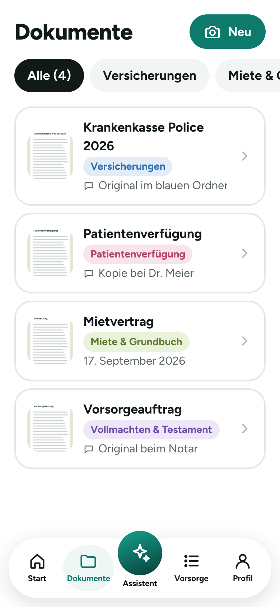
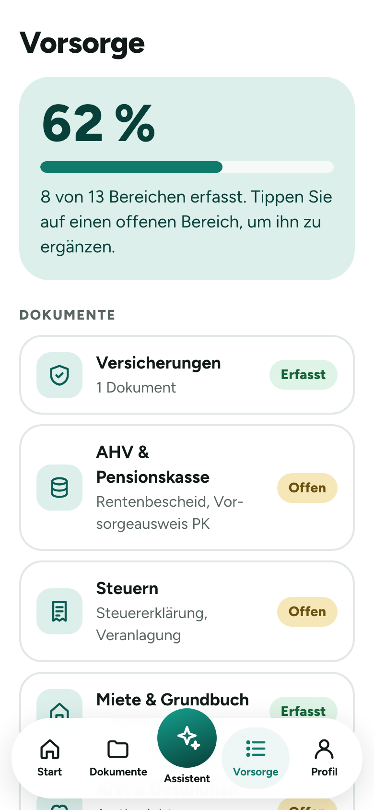
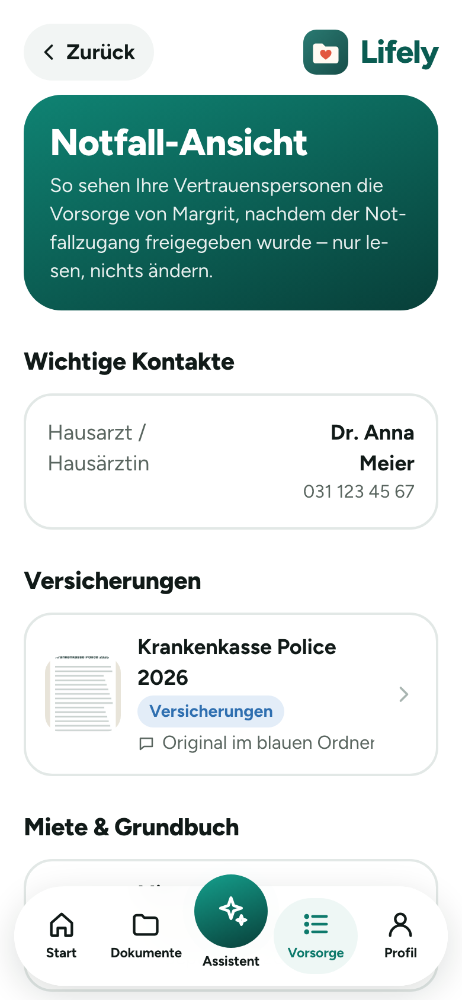

Unterlagen sind verstreut
Policen im Ordner, das Testament beim Notar, Abos im Kopf. Angehörige wissen oft nicht, wo sie anfangen sollen.
Lifely ist Ihr digitaler Vorsorgeordner. Fotografieren Sie Policen, Verträge und Vollmachten, halten Sie Ihre Wünsche fest – und im Ernstfall finden Ihre Angehörigen sofort, was sie brauchen.
Eine Projektarbeit an der Berner Fachhochschule BFH · Prototyp
Warum Lifely
Policen im Ordner, das Testament beim Notar, Abos im Kopf. Angehörige wissen oft nicht, wo sie anfangen sollen.
Was möchten Sie im Spital? Wie soll die Abdankung sein? Lifely hält es fest – in Ihren Worten.
Fristen, Behörden, Versicherungen: Eine Checkliste zeigt Schritt für Schritt, was zu tun ist.
So funktioniert's
Dokument auf den Tisch legen, Foto machen, Kategorie wählen – fertig.
Verträge, Banken, Kontakte und Bestattungswünsche erfassen. Lifely zeigt, was noch fehlt.
Bestimmen Sie Vertrauenspersonen. Im Notfall sehen sie alles – und nur dann.
Funktionen

Versicherungen, AHV, Steuern, Gesundheit, Vollmachten: Jedes Dokument hat seinen Platz. Mit einer Notiz halten Sie fest, wo das Original liegt.
Was gehört in eine Patientenverfügung? Wie schreibe ich ein gültiges Testament? Einfache Antworten zum Schweizer Recht – in klarer Sprache.

Eine Übersicht zeigt, wie vollständig Ihre Vorsorge ist. Erinnerungen melden sich, wenn eine Unterlage wieder geprüft werden sollte.

Hausarzt, Dokumente, Wünsche und Kontakte auf einen Blick – nur lesen, nichts ändern. Dazu eine Checkliste: Was ist im Ernstfall zu tun?
Wir entwickeln Lifely im Rahmen einer Projektarbeit an der BFH. Helfen Sie uns mit Ihren Erfahrungen – die Umfrage dauert 6–10 Minuten und ist anonym.
Zur UmfrageFragen
Lifely ist ein digitaler Vorsorgeordner. Sie legen wichtige Dokumente, Verträge und persönliche Wünsche an einem Ort ab und bestimmen Vertrauenspersonen, die im Ernstfall Zugriff erhalten.
Nein. Lifely ist ein Prototyp aus einer Projektarbeit an der Berner Fachhochschule BFH. Sie können die App ausprobieren – bitte nur mit Testdokumenten.
Im Prototyp bleiben alle Dokumente und Angaben nur im Browser auf Ihrem Gerät. Es gibt keine Cloud und keinen Server, niemand sonst sieht Ihre Unterlagen.
Der Prototyp ist kostenlos und ohne Werbung. Ob und was eine spätere Version kosten soll, möchten wir in der Umfrage herausfinden.
Nein. Lifely läuft im Browser auf Handy, Tablet und Computer. Auf dem Handy können Sie die App zum Startbildschirm hinzufügen.